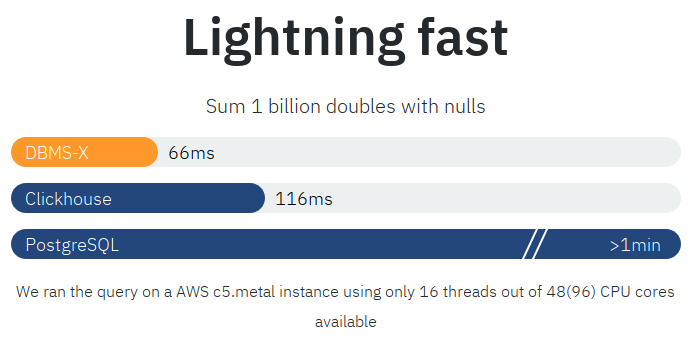

Four Optimization Opportunities

I tried them all.
They helped, but not enough.
Our code is already "ideal".
But it doesn't work fast enough,
need some magic!
Is ClickHouse the fastest system in all scenarios?
Is ClickHouse the fastest system in all scenarios?
— in specific cases someone can win...
... until I notice it.
Is ClickHouse the fastest system in all scenarios?
Works with data only using mmap.
Doesn't support data compression.
Doesn't support indexes and doesn't sort stored data.
Barely supports SQL.
Executes one query faster than ClickHouse?
Executes one query faster than ClickHouse?
SELECT sum(x) FROM table
x Nullable(Float64)
— summing 1 billion doubles.
ClickHouse: 0.116 sec DBMS-X: 0.066 sec
AWS c5.metal, 96 vCPU
Data scanning speed in GB/sec.
double — 8 bytes + NULL mask, possibly 1 byte,
total 9 bytes per value in memory.
Need to process 9 GB of data in memory.
ClickHouse: 0.116 sec, 78 GB/sec. DBMS-X: 0.066 sec, 136 GB/sec. STREAM benchmark: 160 GB/sec.
160 GB/sec. — maximum
memory scanning speed on this machine.
1. Use available CPU cores
(divide work across threads).
2. Use vectorized query processing
(only simple loops, no virtual calls inside).
3. Process data in blocks
(proper CPU cache usage).
4. Cache uncompressed data in memory
(eliminate decompression, deserialization, copying).
Code executed by the database should be the same
as if you manually wrote perfect C++ code.
template <typename T>
T sum(const T * ptr, const T * end)
{
T res{};
while (ptr < end)
{
res += *ptr;
++ptr;
}
return res;
}
while (ptr < end)
{
res += *ptr;
++ptr;
}
But is this perfect C++ code?
— can unroll the loop;
— can vectorize the loop;
— alignment;
— prefetch;
But shouldn't the C++ compiler do this itself?
$ g++ -O2 main.cpp && ./a.out
Res: 499999999067108992.000, time: 2.561, 3.123 GB/sec.
$ g++ -O3 main.cpp && ./a.out
Res: 499999999067108992.000, time: 1.590, 5.033 GB/sec.
$ g++ -O3 -msse4.2 main.cpp && ./a.out
Res: 499999999067108992.000, time: 1.560, 5.129 GB/sec.
$ g++ -O3 -mavx2 main.cpp && ./a.out
Res: 499999999067108992.000, time: 1.188, 6.733 GB/sec.
$ g++ -O3 -march=native main.cpp && ./a.out
Res: 499999999067108992.000, time: 1.192, 6.710 GB/sec.
$ clang++ -O2 main.cpp && ./a.out
Res: 499999999067108992.000, time: 0.726, 11.013 GB/sec.
$ clang++ -O3 main.cpp && ./a.out
Res: 499999999067108992.000, time: 0.724, 11.044 GB/sec.
$ clang++ -O3 -msse4.2 main.cpp && ./a.out
Res: 499999999067108992.000, time: 0.733, 10.918 GB/sec.
$ clang++ -O3 -mavx2 main.cpp && ./a.out
Res: 499999999067108992.000, time: 0.728, 10.983 GB/sec.
$ clang++ -O3 -march=native main.cpp && ./a.out
Res: 499999999067108992.000, time: 0.741, 10.792 GB/sec.
$ g++ -O3 -march=native -S main.cpp && cat main.s
.L11:
vmovups (%rax), %xmm1
vmovupd (%rax), %ymm3
addq $32, %rax
vaddsd %xmm1, %xmm0, %xmm0
vunpckhpd %xmm1, %xmm1, %xmm1
vaddsd %xmm1, %xmm0, %xmm0
vextractf128 $0x1, %ymm3, %xmm1
vaddsd %xmm1, %xmm0, %xmm0
vunpckhpd %xmm1, %xmm1, %xmm1
vaddsd %xmm1, %xmm0, %xmm0
cmpq %rdx, %rax
jne .L11
Loop is unrolled but not vectorized.
$ clang++ -O3 -march=native -S main.cpp && cat main.s
.LBB2_2: # =>This Inner Loop Header: Depth=1
vaddsd (%rdi), %xmm0, %xmm0
addq $8, %rdi
cmpq %rsi, %rdi
jb .LBB2_2
Loop is not unrolled, not vectorized... but this is better on my machine.
Loop with double, float — not vectorized.
Loop with int — vectorized.
Loop with double, float — not vectorized.
Loop with int — vectorized.
— Because it contradicts the C++ standard and IEEE-754.
(a + b) + c != a + (b + c).
This can be "fixed", you just need to:
$ clang++ -O3 -march=native -ffast-math main.cpp && ./a.out
Res: 499999999500000000.000, time: 0.362, 22.086 GB/sec.
$ g++ -O3 -march=native -ffast-math main.cpp && ./a.out
Res: 499999999268435456.000, time: 0.392, 20.428 GB/sec.
$ clang++ -O3 -march=native -ffast-math -S main.cpp && cat main.s
.LBB2_4: # =>This Inner Loop Header: Depth=1
vaddpd (%rdi,%rcx,8), %ymm0, %ymm0
vaddpd 32(%rdi,%rcx,8), %ymm1, %ymm1
vaddpd 64(%rdi,%rcx,8), %ymm2, %ymm2
vaddpd 96(%rdi,%rcx,8), %ymm3, %ymm3
addq $16, %rcx
cmpq %rcx, %rdx
jne .LBB2_4
But you can't do this :(
-ffast-math cannot be used.
Because it breaks calculation precision.
Kahan Summation:
while (ptr < end)
{
double compensated_value = *ptr - compensation;
double new_sum = sum + compensated_value;
compensation = (new_sum - sum) - compensated_value;
sum = new_sum;
++ptr;
}
-ffast-math cannot be used.
Because it breaks calculation precision.
Kahan Summation:
while (ptr < end)
{
double compensated_value = *ptr - compensation;
double new_sum = sum + compensated_value;
compensation = (sum + compensated_value - sum) - compensated_value;
sum = new_sum;
++ptr;
}
-ffast-math cannot be used.
Because it breaks calculation precision.
Kahan Summation:
while (ptr < end)
{
double compensated_value = *ptr - compensation;
double new_sum = sum + compensated_value;
compensation = 0;
sum = new_sum;
++ptr;
}
/// Vectorized version
template <typename Value>
void NO_INLINE addMany(const Value * __restrict ptr, size_t count)
{
/// Compiler cannot unroll this loop, do it manually.
/// (at least for floats, most likely due to the lack of -fassociative-math)
/// Something around the number of SSE registers * the number of elements fit in register.
constexpr size_t unroll_count = 128 / sizeof(T);
T partial_sums[unroll_count]{};
const auto * end = ptr + count;
const auto * unrolled_end = ptr + (count / unroll_count * unroll_count);
while (ptr < unrolled_end)
{
for (size_t i = 0; i < unroll_count; ++i)
partial_sums[i] += ptr[i];
ptr += unroll_count;
}
for (size_t i = 0; i < unroll_count; ++i)
sum += partial_sums[i];
while (ptr < end)
{
sum += *ptr;
++ptr;
}
}
#pragma GCC push_options
#pragma GCC optimize ("-ffast-math")
template <typename T>
__attribute__((__noinline__)) T sum(const T * ptr, const T * end)
{
T res{};
while (ptr < end)
{
res += *ptr;
++ptr;
}
return res;
}
#pragma GCC pop_options
Only for gcc.
Launched a machine on AWS, reproduced the results.
median, 1000 queries
ClickHouse: 0.090 sec
DBMS-X: 0.093 sec
ClickHouse is three milliseconds faster!
Is ClickHouse the fastest system in all scenarios?
Can anyone become faster than ClickHouse on at least one query?
Can use not only CPU but also GPU.
Only works with data that fits in memory.
Doesn't support data compression.
Doesn't support indexes and doesn't sort stored data.
Barely supports GROUP BY on strings.
Executes one query faster than ClickHouse?
Executes one query faster than ClickHouse?
SELECT passenger_count, avg(total_amount)
FROM trips
GROUP BY passenger_count
passenger_count UInt8, total_amount Float32
— calculating avg by key 0..255.
ClickHouse: 0.827 sec (MergeTree) ClickHouse: 0.395 sec (MergeTree + uncompressed cache) ClickHouse: 0.332 sec (Memory) DBMS-Y: 0.204 sec
Xeon E5-2650v2, 32 logical CPU
For executing the query:
SELECT key, avg(value) FROM table GROUP BY key
Data structure:
Lookup table, 256 cells
— array of sum, count pairs.
Algorithm:
Just loop through input data
and update state in the cell.
struct State
{
float sum = 0;
size_t count = 0;
void add(float value)
{
sum += value;
++count;
}
};
void process(const vector<uint8_t> & keys,
const vector<float> & values)
{
State map[256]{};
size_t size = keys.size();
for (size_t i = 0; i < size; ++i)
map[keys[i]].add(values[i]);
return map[0].result();
}
A lookup table is used.
But there are some details:
1. States are not stored directly in it,
but by pointer, allocated in a separate arena.
2. Each cell stores one more bit, whether it's occupied.
3. Buffer for the lookup table is allocated separately.
4. Lookup table size is stored separately and updated on insert.
Four optimization opportunities!
I tried them all.
They helped, but not enough.
Our code is already "ideal".
But it doesn't work fast enough,
need some magic!
Create multiple state tables.
Aggregate into different ones, then merge together.
State map[256 * UNROLL_COUNT]{};
size_t size = keys.size();
size_t i = 0;
size_t size_unrolled = size / UNROLL_COUNT * UNROLL_COUNT;
for (; i < size_unrolled; i += UNROLL_COUNT)
for (size_t j = 0; j < UNROLL_COUNT; ++j)
map[256 * j + keys[i + j]].add(values[i + j]);
for (size_t key = 0; key < 256; ++key)
for (size_t j = 1; j < UNROLL_COUNT; ++j)
map[key].merge(map[256 * j + key]);
for (; i < size; ++i)
map[keys[i]].add(values[i]);
struct State4
{
float sum[4]{};
size_t count[4]{};
...
};
State4 map[256]{};
size_t size = keys.size() / 4 * 4;
for (size_t i = 0; i < size; i += 4)
{
map[keys[i]].add<0>(values[i]);
map[keys[i + 1]].add<1>(values[i]);
map[keys[i + 2]].add<2>(values[i]);
map[keys[i + 3]].add<3>(values[i]);
}
...
State map[256]{};
static constexpr size_t BUF_SIZE = 16384 / 256 / sizeof(float); /// Should fit in L1d.
float buffers[256 * BUF_SIZE];
float * ptrs[256];
for (size_t i = 0; i < 256; ++i)
ptrs[i] = &buffers[i * BUF_SIZE];
size_t size = keys.size();
const auto * key = keys.data();
const auto * key_end = key + size;
const auto * value = values.data();
while (key < key_end)
{
*ptrs[*key] = *value;
if (++ptrs[*key] == &buffers[(*key + 1) * BUF_SIZE]) /// Calculation is better than L1d load.
{
ptrs[*key] -= BUF_SIZE;
map[*key].addBatch<BUF_SIZE>(ptrs[*key], BUF_SIZE);
}
++key;
++value;
}
for (size_t i = 0; i < 256; ++i)
map[i].addBatch<4>(&buffers[i * BUF_SIZE], ptrs[i] - &buffers[i * BUF_SIZE]);
State map[256]{};
size_t size = keys.size();
/// Calculate histograms of keys.
using CountType = UInt32;
static constexpr size_t HISTOGRAM_SIZE = 256;
CountType count[HISTOGRAM_SIZE * UNROLL_COUNT]{};
size_t unrolled_size = size / UNROLL_COUNT * UNROLL_COUNT;
for (const UInt8 * elem = keys.data(); elem < keys.data() + unrolled_size; elem += UNROLL_COUNT)
for (size_t i = 0; i < UNROLL_COUNT; ++i)
++count[i * HISTOGRAM_SIZE + elem[i]];
for (const UInt8 * elem = keys.data() + unrolled_size; elem < keys.data() + size; ++elem)
++count[*elem];
for (size_t i = 0; i < HISTOGRAM_SIZE; ++i)
for (size_t j = 1; j < UNROLL_COUNT; ++j)
count[i] += count[j * HISTOGRAM_SIZE + i];
/// Row indices in a batch for each key.
PODArray<UInt32> indices(size);
UInt32 * positions[HISTOGRAM_SIZE];
positions[0] = indices.data();
for (size_t i = 1; i < HISTOGRAM_SIZE; ++i)
positions[i] = positions[i - 1] + count[i - 1];
for (size_t i = 0; i < size; ++i)
*positions[keys[i]]++ = i;
/// Update states.
UInt32 * idx = indices.data();
for (size_t i = 0; i < HISTOGRAM_SIZE; ++i)
for (; idx < positions[i]; ++idx)
map[i].add(values[*idx]);
Testing on different servers gives different results.
On AMD EPYC, Ryzen processors there's larger cache
— can unroll by 8x.
On Intel processors this causes terrible slowdowns
— and maximum is 4x.
On model code:
Baseline: 360 million rows/sec., 1804 MiB/sec. Optimized: 1339 million rows/sec., 6695 MiB/sec. x3.72
Real query in ClickHouse:
ClickHouse (old): 0.332 sec. DBMS-Y: 0.204 sec ClickHouse (new): 0.197 sec. x1.69
If some system on some degenerate query
works slightly faster than ClickHouse
— it means I haven't optimized the code yet,
and I'll do it tomorrow.
ClickHouse's internal architecture allows
optimizing for the task and hardware.
Batch Aggregator:
https://github.com/ClickHouse/ClickHouse/pull/6435
Speeding up sum function:
https://github.com/ClickHouse/ClickHouse/pull/10992
Speeding up GROUP BY 8bit key:
https://github.com/ClickHouse/ClickHouse/pull/13055
https://github.com/ClickHouse/ClickHouse/pull/13056
https://github.com/ClickHouse/ClickHouse/pull/13084
https://github.com/ClickHouse/ClickHouse/pull/13091
https://github.com/ClickHouse/ClickHouse/pull/13096
https://github.com/ClickHouse/ClickHouse/pull/13099
And test with examples:
https://github.com/ClickHouse/ClickHouse/blob/master/
src/Common/tests/average.cpp